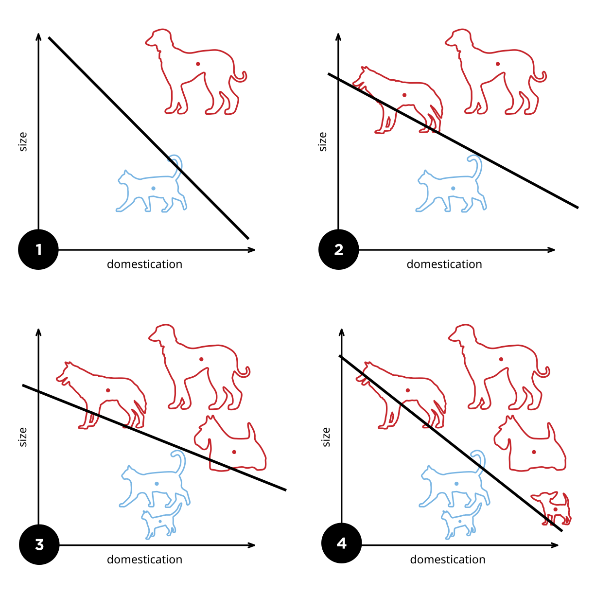

Cours 2 · 2026–2027
Apprentissage machine
Du neurone biologique au réseau qui apprend ses poids.
John Samuel · CPE Lyon
Intelligence artificielle et Deep Learning
Neurones · Perceptron · Perceptron multicouches · Réseaux de neurones
y = f(Σ wᵢxᵢ + b)une somme pondérée, un seuil, une sortie — le neurone artificiel
Fil rougeUn seul mécanisme — sommer, activer, corriger les poids — construit tout le cours, du perceptron de 1958 aux réseaux profonds.
notes
Intelligence artificielle et Deep Learning — Apprentissage machine
John Samuel, CPE Lyon · Année 2026-2027 · Courriel : john.samuel@cpe.fr
 Licence CC BY-SA 4.0.
Licence CC BY-SA 4.0.Touches : ← → diapositives,
nnotes,rmode lecture.
2.1 · Neurones biologiques
Un neurone reçoit, intègre, transmet

{kind=link}
LectureChaque élément du neurone biologique a son équivalent dans le neurone artificiel de la diapositive suivante.
notes
- Neurone biologique. Source : https://en.wikipedia.org/wiki/File:Neuron3.png
2.1 · Neurones biologiques
Des neurones artificiels connectés en couches
À retenirUn réseau de neurones artificiels est une collection d'unités interconnectées appelées neurones artificiels.
notes
- Réseaux de neurones artificiels (figure Colored_neural_network.svg du cours original, redessinée : 3 neurones d'entrée, 4 cachés, 2 de sortie).
2.1 · Neurones biologiques
Biologique et artificiel, point par point (1/2)
| Aspect | Neurone biologique | Neurone artificiel |
|---|---|---|
| Structure | Composé de dendrites, d'un soma (corps cellulaire), et d'un axone | Composé de poids (équivalents aux connexions), biais, et activation |
| Fonction | Transmet des impulsions électriques entre les neurones | Calcule une valeur de sortie en fonction de la somme pondérée des entrées |
| Entrée | Reçoit des signaux par les dendrites | Reçoit des valeurs pondérées (par les poids) |
| Poids des connexions | La force des synapses influence l'intensité du signal transmis | Les poids déterminent l'importance de chaque entrée |
À retenirPoids = synapse, somme pondérée = intégration dans le soma.
notes
- Tableau comparatif neurone biologique / neurone artificiel : structure, fonction, entrée, poids des connexions.
2.1 · Neurones biologiques
Biologique et artificiel, point par point (2/2)
| Aspect | Neurone biologique | Neurone artificiel |
|---|---|---|
| Activation | Un potentiel d'action est déclenché si le signal dépasse un seuil | Une fonction d'activation est appliquée pour déterminer la sortie |
| Sortie | Envoie un signal via l'axone vers d'autres neurones | Produit une sortie, souvent transmise aux neurones suivants dans le réseau |
| Apprentissage | Renforce les connexions synaptiques en fonction de l'expérience (plasticité synaptique) | Ajuste les poids via des algorithmes d'apprentissage (ex. rétropropagation) |
| Rôle | Participe à des processus cognitifs complexes | Contribue aux calculs et à la reconnaissance de motifs |
À retenirApprendre, dans les deux cas, c'est modifier la force des connexions.
notes
- Tableau comparatif (suite) : activation, sortie, apprentissage, rôle.
2.1 · Neurones biologiques
Un réseau de neurones : connexions, signaux, activation
Les réseaux de neurones sont couramment utilisés en apprentissage machine — classification, régression, reconnaissance d'images, traitement du langage naturel, et bien d'autres. Un réseau de neurones artificiels est une collection d'unités interconnectées appelées neurones artificiels, inspirée de la structure du cerveau biologique.
Connexions
Chaque connexion entre les neurones, similaire aux synapses dans le cerveau biologique, peut transmettre un signal aux autres neurones.
Transmission de signal
Un neurone artificiel reçoit un signal, le traite à l'aide d'une fonction non linéaire, et peut ensuite transmettre un signal aux neurones qui lui sont connectés.
Fonction d'activation
La sortie de chaque neurone est calculée par une fonction non linéaire appliquée à la somme pondérée de ses entrées. Cette non-linéarité permet de modéliser des relations complexes.
notes
- Les réseaux de neurones sont couramment utilisés dans le domaine de l'apprentissage machine, en particulier dans des tâches telles que la classification, la régression, la reconnaissance d'images, le traitement du langage naturel, et bien d'autres. Un réseau de neurones artificiels est une collection d'unités interconnectées appelées neurones artificiels. Ces réseaux sont inspirés de la structure du cerveau biologique.
- Connexions : chaque connexion entre les neurones, similaire aux synapses dans le cerveau biologique, peut transmettre un signal aux autres neurones. Transmission de signal : un neurone artificiel reçoit un signal, le traite à l'aide d'une fonction non linéaire, et peut ensuite transmettre un signal aux neurones qui lui sont connectés. Fonction d'activation : la sortie de chaque neurone est calculée par une fonction non linéaire appliquée à la somme pondérée de ses entrées ; cette fonction introduit une non-linéarité dans le réseau, permettant de modéliser des relations complexes.
2.1 · Neurones biologiques
Ce qui s'apprend : des poids, et un seuil
Poids ajustables
Les neurones et les connexions ont généralement des poids qui sont ajustés au fur et à mesure de l'apprentissage. Ces poids déterminent l'importance relative des différentes entrées pour chaque neurone.
Ajustement des poids
Les poids peuvent être ajustés pour augmenter ou diminuer la force du signal au niveau d'une connexion, influençant ainsi la contribution de cette connexion aux calculs du réseau.
Seuil
Les neurones peuvent avoir un seuil, de sorte qu'un signal n'est envoyé que si la somme pondérée de ses entrées dépasse ce seuil. Cela permet au réseau de moduler sa sensibilité aux entrées.
À retenirLe neurone artificiel ne garde du neurone biologique qu'une idée : sommer des entrées pondérées et décider par un seuil.
notes
- Poids ajustables : les neurones et les connexions ont des poids ajustés au fur et à mesure de l'apprentissage ; ils déterminent l'importance relative des entrées. Ajustement des poids : augmenter ou diminuer la force du signal d'une connexion. Seuil : un signal n'est envoyé que si la somme pondérée dépasse ce seuil ; le réseau module ainsi sa sensibilité aux entrées.
2.2 · Perceptron
Le perceptron : un neurone qui apprend à classer en deux
Le perceptron est un algorithme d'apprentissage supervisé utilisé pour la classification binaire : déterminer si une entrée donnée appartient ou non à une classe particulière.
Origine
L'idée était de créer un modèle simple de neurone artificiel inspiré du fonctionnement des neurones biologiques. Rosenblatt a formulé un algorithme d'apprentissage qui permet au perceptron d'ajuster ses poids en fonction des erreurs de classification, améliorant ainsi ses performances au fil du temps.
Fonctionnement
Le perceptron prend plusieurs entrées pondérées et les combine en une somme. Cette somme est soumise à une fonction d'activation, généralement une fonction échelon (step function), qui produit la sortie binaire du perceptron.
Limitations
Il ne peut pas résoudre des problèmes non linéaires ni apprendre des modèles complexes. Il a cependant jeté les bases des réseaux multicouches, qui peuvent apprendre des représentations hiérarchiques.
notes
- Le perceptron est un algorithme d'apprentissage supervisé utilisé pour la classification binaire. Il est conçu pour résoudre des problèmes où l'objectif est de déterminer si une entrée donnée appartient ou non à une classe particulière.
- Le perceptron a été inventé par Frank Rosenblatt en 1958. L'idée était de créer un modèle simple de neurone artificiel inspiré du fonctionnement des neurones biologiques. Rosenblatt a formulé un algorithme d'apprentissage qui permet au perceptron d'ajuster ses poids en fonction des erreurs de classification, améliorant ainsi ses performances au fil du temps.
- Fonctionnement : le perceptron prend plusieurs entrées pondérées et les combine en une somme. Ensuite, cette somme est soumise à une fonction d'activation, généralement une fonction échelon (step function), qui produit la sortie binaire du perceptron.
- Limitations : capacité limitée à résoudre des problèmes non linéaires, incapacité à apprendre des modèles complexes. Cependant, il a jeté les bases pour le développement de réseaux de neurones plus avancés, en particulier les réseaux multicouches qui peuvent apprendre des représentations hiérarchiques.
2.2 · Perceptron
La frontière se déplace à chaque exemple

{kind=link}
À retenirChaque erreur de classification déplace la droite ; quand plus aucun exemple n'est mal classé, l'apprentissage s'arrête.
notes
- Perceptron en mettant à jour sa limite linéaire à mesure que d'autres exemples de formation sont ajoutés. Source : https://en.wikipedia.org/wiki/File:Perceptron_example.svg
2.2 · Perceptron
Anatomie du perceptron
À retenirEntrées pondérées, somme, fonction échelon : la sortie vaut 1 si la somme dépasse le seuil, 0 sinon.
notes
- Schéma du perceptron (figure Perceptron.svg du cours original, redessinée) : entrées x₁…xₙ, poids w₁…wₙ, biais b (entrée constante 1), somme Σ, fonction d'activation échelon, sortie y.
2.2 · Perceptron · définition formelle
Les notations : exemples, caractéristiques, poids
Convention\(x_{j,0} = 1\) fait entrer le biais dans le vecteur de poids : \(w_0\) joue le rôle du seuil.
notes
- Définition formelle. Soit y = f(z) la sortie du perceptron pour un vecteur d'entrée z ; N le nombre d'exemples d'entraînement ; X l'espace de saisie des caractéristiques ; {(x₁, d₁), …, (x_N, d_N)} les N exemples d'entraînement, où x_i est le vecteur caractéristique du i-ème exemple et d_i la valeur de sortie souhaitée ; x_{j,i} est la i-ème caractéristique du j-ème exemple ; x_{j,0} = 1.
- Les poids : w_i est la i-ème valeur du vecteur de poids ; w_i(t) est la i-ème valeur du vecteur de poids à un moment donné t.
2.2 · Perceptron · algorithme
L'algorithme du perceptron en quatre étapes
- Initialiser les poids et les seuils
valeurs nulles ou petites valeurs aléatoires
- Pour chaque exemple \((x_j, d_j)\) de l'ensemble d'entraînement, calculer la sortie actuelle
\[y_j(t) = f[w(t)\cdot x_j] = f[w_0(t)x_{j,0} + w_1(t)x_{j,1} + w_2(t)x_{j,2} + \dotsb + w_n(t)x_{j,n}]\]
- Mettre à jour les poids
\[w_i(t+1) = w_i(t) + r\,(d_j - y_j(t))\,x_{j,i}\] où \(r\) est le taux d'apprentissage
- Répéter l'étape 2
jusqu'à ce que l'erreur d'itération \(\frac{1}{s}\sum |d_j - y_j(t)|\) soit inférieure au seuil \(\gamma\) spécifié par l'utilisateur, ou qu'un nombre prédéterminé d'itérations ait été effectué — \(s\) est la taille de l'échantillon
À retenirPrédiction juste : \(d_j - y_j = 0\), rien ne bouge ; sinon les poids glissent vers l'exemple.
notes
- Étapes : 1. Initialiser les poids et les seuils. 2. Pour chaque exemple (x_j, d_j) dans l'ensemble d'entraînement : calculer la sortie actuelle y_j(t) = f[w(t)·x_j] = f[w_0(t)x_{j,0} + w_1(t)x_{j,1} + … + w_n(t)x_{j,n}] ; calculer le poids w_i(t+1) = w_i(t) + r (d_j − y_j(t)) x_{j,i}, r est le taux d'apprentissage.
- 3. Répéter l'étape 2 jusqu'à ce que l'erreur d'itération (1/s) Σ|d_j − y_j(t)| soit inférieure au seuil γ spécifié par l'utilisateur, ou qu'un nombre prédéterminé d'itérations ait été effectué, où s est la taille de l'ensemble de l'échantillon.
2.2 · Perceptron · activation
La fonction d'échelon décide : 1 au-dessus du seuil, 0 sinon
Le perceptron utilise généralement une fonction d'activation simple, et la fonction d'échelon (step function) est fréquemment choisie. Elle attribue une sortie de 1 si la somme pondérée des entrées dépasse un certain seuil, et 0 sinon.
ConséquenceLa sortie est binaire et la fonction n'est pas dérivable au seuil : c'est ce que les réseaux multicouches abandonneront.
notes
- Le perceptron utilise généralement une fonction d'activation simple, et la fonction d'échelon (step function) est fréquemment choisie pour cette tâche. Définition : la fonction d'échelon attribue une sortie de 1 si la somme pondérée des entrées dépasse un certain seuil, et 0 sinon.
2.2 · Perceptron · Python
Un perceptron en NumPy : les paramètres
import numpy as np class Perceptron: def __init__(self, taux_apprentissage=0.01, n_iterations=1000): self.taux_apprentissage = taux_apprentissage self.n_iterations = n_iterations self.poids = None self.biais = None
| taux_apprentissage | r |
| n_iterations | époques max |
| poids | w₁ … wₙ |
| biais | w₀ |
Les deux premiers sont fixés par l'utilisateur ; les deux derniers sont appris et n'existent pas avant ajuster().
RepèreLe biais est stocké à part plutôt que comme \(w_0\) : même modèle, autre convention.
notes
import numpy as np class Perceptron: def __init__(self, taux_apprentissage=0.01, n_iterations=1000): self.taux_apprentissage = taux_apprentissage self.n_iterations = n_iterations self.poids = None self.biais = None
2.2 · Perceptron · Python
ajuster() : l'algorithme, ligne par ligne
class Perceptron: def ajuster(self, X, y): n_exemples, n_caracteristiques = X.shape self.poids = np.zeros(n_caracteristiques) self.biais = 0 for _ in range(self.n_iterations): for i in range(n_exemples): ligne = X[i] y_calculé = np.dot(ligne, self.poids) + self.biais prediction = 1 if y_calculé >= 0 else 0 erreur = y[i] - prediction # Mise à jour des poids et biais self.poids += self.taux_apprentissage * erreur * ligne self.biais += self.taux_apprentissage * erreur
| np.zeros(…) | étape 1 |
| np.dot + biais | w(t)·xⱼ |
| 1 if … else 0 | f échelon |
| erreur | dⱼ − yⱼ(t) |
| poids += r·erreur·ligne | étape 3 |
À retenirLa ligne poids += r · erreur · ligne est toute la règle d'apprentissage du perceptron.
notes
class Perceptron: def ajuster(self, X, y): n_exemples, n_caracteristiques = X.shape self.poids = np.zeros(n_caracteristiques) self.biais = 0 for _ in range(self.n_iterations): for i in range(n_exemples): ligne = X[i] y_calculé = np.dot(ligne, self.poids) + self.biais prediction = 1 if y_calculé >= 0 else 0 erreur = y[i] - prediction # Mise à jour des poids et biais self.poids += self.taux_apprentissage * erreur * ligne self.biais += self.taux_apprentissage * erreur
2.2 · Perceptron · Python
predire(), puis un essai sur six points
class Perceptron: def predire(self, X): y_calculé = np.dot(X, self.poids) + self.biais return np.where(y_calculé >= 0, 1, 0) # Données d'exemple X = np.array([[1, 1], [2, 2], [1.5, 1.5], [0, 0], [0.5, 0.5], [1, 0]]) y = np.array([1, 1, 1, 0, 0, 0]) # Création et entraînement du perceptron perceptron = Perceptron(taux_apprentissage=0.1, n_iterations=10) perceptron.ajuster(X, y) # Prédiction print(perceptron.predire(np.array([[1, 1], [0, 0]])))
| (1, 1) | classe 1 |
| (0, 0) | classe 0 |
Six points, deux classes séparables par une droite : dix itérations suffisent.
LimiteLe perceptron n'apprend que des séparations linéaires : il ne peut pas résoudre XOR — d'où les couches cachées.
notes
class Perceptron: def predire(self, X): y_calculé = np.dot(X, self.poids) + self.biais return np.where(y_calculé >= 0, 1, 0) # Données d'exemple X = np.array([[1, 1], [2, 2], [1.5, 1.5], [0, 0], [0.5, 0.5], [1, 0]]) y = np.array([1, 1, 1, 0, 0, 0]) # Création et entraînement du perceptron perceptron = Perceptron(taux_apprentissage=0.1, n_iterations=10) perceptron.ajuster(X, y) # Prédiction print(perceptron.predire(np.array([[1, 1], [0, 0]]))) # Sortie : [1 0]- Le perceptron n'apprend que des séparations linéaires : il ne peut pas résoudre XOR — d'où les couches cachées.
2.3 · Perceptron multicouches
Un MLP empile des couches entièrement connectées
DéfinitionChaque neurone d'une couche est connecté à tous les neurones de la couche suivante — d'où le nom de « réseau entièrement connecté ».
notes
- Un MLP est composé de plusieurs couches de neurones. Chaque neurone dans une couche est connecté à tous les neurones de la couche suivante (d'où le nom de « réseau de neurones entièrement connecté »). Un MLP possède typiquement : une couche d'entrée (chaque neurone représente une caractéristique de l'entrée), une ou plusieurs couches cachées (représentations plus abstraites), une couche de sortie (la prédiction du réseau).
2.3 · Perceptron multicouches · initialisation
Entre deux couches : une matrice de poids et un vecteur de biais
Les poids \(W\) et les biais \(b\) sont initialisés aléatoirement pour chaque connexion entre les neurones. Pour une couche \(l\) de \(n_l\) neurones connectée à la couche \(l+1\) de \(n_{l+1}\) neurones, \(W^{(l)}\) est la matrice des poids et \(b^{(l)}\) le vecteur des biais.
| couches | W | b |
|---|---|---|
| 3 → 5 | 3 × 5 | 1 × 5 |
| 5 → 4 | 5 × 4 | 1 × 4 |
| 4 → 1 | 4 × 1 | 1 × 1 |
À retenirUn réseau [3, 5, 4, 1] a 15 + 20 + 4 poids et 5 + 4 + 1 biais : 49 paramètres à apprendre.
notes
- Les poids W et les biais b sont initialisés aléatoirement pour chaque connexion entre les neurones. Par exemple, pour une couche l de n_l neurones connectée à la couche l+1 de n_{l+1} neurones : W^(l) ∈ ℝ^{n_l × n_{l+1}} est la matrice des poids ; b^(l) ∈ ℝ^{1 × n_{l+1}} est le vecteur des biais.
2.3 · Perceptron multicouches · initialisation
En NumPy : une liste de matrices, une liste de vecteurs
import numpy as np # Initialisation de la structure du réseau couches = [3, 5, 4, 1] # 3 entrées, 2 couches cachées de 5 et 4 neurones, 1 sortie # Initialisation des poids et biais aléatoires poids = [np.random.rand(couches[i], couches[i + 1]) for i in range(len(couches) - 1)] biais = [np.random.rand(1, couches[i + 1]) for i in range(len(couches) - 1)]
| poids[0] | (3, 5) |
| poids[1] | (5, 4) |
| poids[2] | (4, 1) |
| biais[i] | (1, couches[i+1]) |
np.random.rand tire dans [0, 1) ; les initialisations modernes (Xavier, He) centrent et réduisent ces valeurs.
notes
import numpy as np # Initialisation de la structure du réseau couches = [3, 5, 4, 1] # exemple : 3 neurones d'entrée, 2 couches cachées de 5 et 4 neurones, et 1 neurone de sortie # Initialisation des poids et biais aléatoires poids = [np.random.rand(couches[i], couches[i + 1]) for i in range(len(couches) - 1)] biais = [np.random.rand(1, couches[i + 1]) for i in range(len(couches) - 1)]
2.3 · Perceptron multicouches · propagation avant
La propagation avant : combinaison linéaire, puis activation, couche après couche
- Entrée
les données traversent chaque couche du réseau
a⁽⁰⁾ = x - Combinaison linéaire
poids × entrée + biais, à chaque neurone
z = a·W + b - Fonction d'activation
une non-linéarité appliquée à z
a = f(z) - Couche suivante
l'activation devient l'entrée de la couche d'après
jusqu'à la sortie
Sigmoïde
pour la couche de sortie d'une classification binaire
ReLU — Rectified Linear Unit
pour introduire de la non-linéarité dans les couches cachées
notes
- La propagation avant consiste à faire passer les données d'entrée à travers chaque couche du réseau. À chaque neurone, on effectue une combinaison linéaire de ses entrées (poids × entrée + biais) suivie d'une fonction d'activation. Les fonctions d'activation courantes sont : sigmoïde pour la sortie entre 0 et 1, ReLU (Rectified Linear Unit) pour introduire de la non-linéarité.
2.3 · Perceptron multicouches · propagation avant
L'entrée nette d'une couche est une combinaison linéaire de la précédente
où \(z^{(l+1)}\) est l'entrée nette pour chaque neurone de la couche \(l+1\), et \(a^{(l)}\) l'activation de la couche \(l\)
La propagation avant est le processus par lequel les données d'entrée traversent les couches du réseau. À chaque neurone de la couche \(l\), on calcule une activation basée sur une combinaison linéaire des activations de la couche précédente, suivie d'une fonction d'activation.
LectureUne ligne de \(a^{(l)}\) par exemple, une colonne de \(W^{(l)}\) par neurone de la couche suivante : le produit matriciel traite tout le lot d'un coup.
notes
- La propagation avant est le processus par lequel les données d'entrée traversent les couches du réseau. À chaque neurone de la couche l, on calcule une activation basée sur une combinaison linéaire des activations de la couche précédente, suivie d'une fonction d'activation. Soit a^(l) l'activation de la couche l : combinaison linéaire z^(l+1) = a^(l) W^(l) + b^(l), où z^(l+1) est l'entrée nette pour chaque neurone de la couche l+1.
2.3 · Perceptron multicouches · propagation avant
ReLU dans les couches cachées, sigmoïde en sortie
À retenirLa sortie \(a^{(L)}\) est une probabilité entre 0 et 1 ; les couches cachées gardent des activations non bornées.
notes
- Application de la fonction d'activation : par exemple, pour la fonction d'activation ReLU utilisée dans les couches cachées, a^(l+1) = ReLU(z^(l+1)) = max(0, z^(l+1)). Pour la couche de sortie, dans un problème de classification binaire, on utilise souvent la fonction sigmoïde : a^(L) = σ(z^(L)) = 1 / (1 + e^{−z^(L)}), où L représente la dernière couche.
2.3 · Perceptron multicouches · propagation avant
Deux fonctions d'activation, deux lignes de NumPy
# Fonction d'activation Sigmoïde def sigmoid(x): return 1 / (1 + np.exp(-x)) # Fonction d'activation ReLU def relu(x): return np.maximum(0, x)
| sigmoid(np.array([-2, 0, 2])) | [0.12 0.5 0.88] |
| relu(np.array([-2, 0, 2])) | [0 0 2] |
Les deux s'appliquent élément par élément à toute une matrice d'activations.
notes
# Fonction d'activation Sigmoïde def sigmoid(x): return 1 / (1 + np.exp(-x)) # Fonction d'activation ReLU def relu(x): return np.maximum(0, x)
2.3 · Perceptron multicouches · propagation avant
propagation_avant() garde toutes les activations pour la suite
# Propagation avant à travers le réseau def propagation_avant(entree, poids, biais): activation = entree activations = [activation] # stocke les activations de chaque couche pour le backprop # Propagation à travers chaque couche cachée for i in range(len(poids) - 1): z = np.dot(activation, poids[i]) + biais[i] activation = relu(z) # on utilise ReLU pour les couches cachées activations.append(activation) # Couche de sortie (par ex., sigmoid pour une tâche de classification binaire) z = np.dot(activation, poids[-1]) + biais[-1] activation = sigmoid(z) activations.append(activation) return activations
| activations[0] | l'entrée |
| activations[1…] | couches cachées |
| activations[-1] | la prédiction |
La liste complète est nécessaire à la rétropropagation : chaque gradient utilise l'activation de la couche précédente.
notes
# Propagation avant à travers le réseau def propagation_avant(entree, poids, biais): activation = entree activations = [activation] # stocke les activations de chaque couche pour le backprop # Propagation à travers chaque couche cachée for i in range(len(poids) - 1): z = np.dot(activation, poids[i]) + biais[i] activation = relu(z) # on utilise ReLU pour les couches cachées activations.append(activation) # Couche de sortie (par ex., sigmoid pour une tâche de classification binaire) z = np.dot(activation, poids[-1]) + biais[-1] activation = sigmoid(z) activations.append(activation) return activations
2.3 · Perceptron multicouches · erreur
L'entropie croisée binaire mesure l'écart entre prédiction et étiquette
Une fois les prédictions faites, il est essentiel de calculer l'erreur. Dans le cas de la classification binaire, la log-loss ou l'entropie croisée binaire est couramment utilisée : elle quantifie l'écart entre les prédictions et les vraies étiquettes.
LectureSi \(y = 1\), seul \(\log \hat{y}\) compte : prédire 0,01 coûte très cher, prédire 0,99 presque rien.
notes
- Une fois les prédictions faites, il est essentiel de calculer l'erreur. Dans le cas de la classification binaire, la log-loss ou l'entropie croisée binaire est couramment utilisée. Cette étape permet de quantifier l'écart entre les prédictions et les vraies étiquettes.
- Pour évaluer la qualité des prédictions, on utilise une fonction de perte. Si y est la véritable étiquette et ŷ la prédiction, la perte pour un exemple est −(y·log(ŷ) + (1−y)·log(1−ŷ)). Pour un ensemble de m exemples, la perte totale devient J(W, b) = −(1/m) Σ (y⁽ⁱ⁾·log(ŷ⁽ⁱ⁾) + (1−y⁽ⁱ⁾)·log(1−ŷ⁽ⁱ⁾)).
2.3 · Perceptron multicouches · erreur
La perte en NumPy
# Fonction de perte (Binary Cross-Entropy) def calcul_perte(y_pred, y_vrai): m = y_vrai.shape[0] perte = -np.sum(y_vrai * np.log(y_pred) + (1 - y_vrai) * np.log(1 - y_pred)) / m return perte
| y_vrai | [1, 0] |
| y_pred | [0.9, 0.2] |
| perte | 0.164 |
−(log 0,9 + log 0,8) / 2 ≈ 0,164. En pratique on borne y_pred loin de 0 et 1 pour éviter log(0).
notes
# Fonction de perte (Binary Cross-Entropy) def calcul_perte(y_pred, y_vrai): m = y_vrai.shape[0] perte = -np.sum(y_vrai * np.log(y_pred) + (1 - y_vrai) * np.log(1 - y_pred)) / m return perte
2.3 · Perceptron multicouches · rétropropagation
La rétropropagation remonte l'erreur de la sortie vers l'entrée
- Perte \(J\)
calculée sur la sortie du réseau
J(W, b) - Gradient de la couche de sortie
l'erreur \(\delta^{(L)}\) et les gradients de \(W\) et \(b\)
∂J/∂W⁽ᴸ⁻¹⁾ - Propagation en arrière
à travers chaque couche cachée, avec la dérivée des fonctions d'activation
δ⁽ˡ⁾ ← δ⁽ˡ⁺¹⁾ - Mise à jour
ajuster \(W\) et \(b\) pour réduire l'erreur
W ← W − α ∂J/∂W
La rétropropagation ajuste les poids et les biais en fonction de l'erreur obtenue. Elle utilise le gradient de la perte pour chaque paramètre du réseau, appliqué depuis la couche de sortie jusqu'à la couche d'entrée.
À retenirLa rétropropagation calcule le gradient de la perte par rapport à \(W\) et \(b\) ; la descente de gradient s'en sert pour les ajuster.
notes
- La rétropropagation ajuste les poids et les biais en fonction de l'erreur obtenue. Elle utilise le gradient de la perte pour chaque paramètre du réseau, appliqué depuis la couche de sortie jusqu'à la couche d'entrée : calcul du gradient pour la couche de sortie ; propagation des gradients en arrière à travers chaque couche cachée en utilisant la dérivée des fonctions d'activation. La rétropropagation est utilisée pour calculer le gradient de la perte par rapport aux paramètres W et b, et ajuster ces paramètres pour réduire l'erreur.
2.3 · Perceptron multicouches · rétropropagation
Couche de sortie : l'erreur est simplement la prédiction moins l'étiquette
Pourquoi si simpleAvec la sigmoïde en sortie et l'entropie croisée, les dérivées se simplifient exactement en \(a^{(L)} - y\).
notes
- Calcul du gradient pour la couche de sortie. Si L est la couche de sortie, l'erreur (ou delta) pour cette couche est δ^(L) = a^(L) − y. Le gradient de la perte par rapport aux poids de cette couche est ∂J/∂W^(L−1) = (a^(L−1))^T δ^(L), et le gradient par rapport aux biais ∂J/∂b^(L−1) = δ^(L).
2.3 · Perceptron multicouches · rétropropagation
Couches cachées : le delta se propage à travers les poids et la dérivée de l'activation
où \(f'(z^{(l)})\) est la dérivée de la fonction d'activation de la couche \(l\)
À retenirC'est la règle de la chaîne : chaque couche multiplie le delta reçu par ses poids, puis par la pente de sa propre activation.
notes
- Calcul des gradients pour les couches cachées. Pour une couche l, le delta se propage à partir de la couche suivante : δ^(l) = (δ^(l+1) W^(l)) · f'(z^(l)), où f'(z^(l)) est la dérivée de la fonction d'activation de la couche l. Le gradient par rapport aux poids de cette couche est ∂J/∂W^(l) = (a^(l))^T δ^(l+1) ; le gradient par rapport aux biais est ∂J/∂b^(l) = δ^(l+1).
2.3 · Perceptron multicouches · rétropropagation
La descente de gradient fait un pas contre le gradient
Les poids et les biais sont ajustés à chaque itération pour minimiser la perte en utilisant la descente de gradient avec un taux d'apprentissage \(\alpha\).
À retenir\(\alpha\) trop petit : on avance à peine ; trop grand : on dépasse le minimum. C'est le premier hyperparamètre à régler.
notes
- Mise à jour des poids et des biais. Les poids et les biais sont ajustés à chaque itération pour minimiser la perte en utilisant la descente de gradient avec un taux d'apprentissage α : W^(l) := W^(l) − α ∂J/∂W^(l) ; b^(l) := b^(l) − α ∂J/∂b^(l).
2.3 · Perceptron multicouches · rétropropagation
Les dérivées des deux activations
# Fonction de dérivée pour Sigmoïde et ReLU def derivee_sigmoid(x): return x * (1 - x) def derivee_relu(x): return np.where(x > 0, 1, 0)
| derivee_sigmoid(a) | σ(z)(1 − σ(z)) |
| derivee_relu(a) | 1 si a > 0, sinon 0 |
Les deux fonctions reçoivent l'activation \(a = f(z)\), pas \(z\) : pour la sigmoïde, \(f'(z) = a(1-a)\) ; pour ReLU, le signe de \(a\) est celui de \(z\).
notes
# Fonction de dérivée pour Sigmoïde et ReLU def derivee_sigmoid(x): return x * (1 - x) def derivee_relu(x): return np.where(x > 0, 1, 0)
2.3 · Perceptron multicouches · rétropropagation
retropropagation() : les deltas, puis la mise à jour
def retropropagation(activations, poids, biais, y_vrai, taux_apprentissage=0.01): # Étape 1 : Calculer le gradient de la perte pour la couche de sortie erreur = activations[-1] - y_vrai deltas = [erreur * derivee_sigmoid(activations[-1])] # Étape 2 : Calculer les gradients pour chaque couche cachée for i in reversed(range(len(poids) - 1)): delta = np.dot(deltas[-1], poids[i + 1].T) * derivee_relu(activations[i + 1]) deltas.append(delta) # Inverser les deltas pour qu'ils correspondent à chaque couche du réseau deltas = deltas[::-1] # Mise à jour des poids et biais for i in range(len(poids)): poids[i] -= taux_apprentissage * np.dot(activations[i].T, deltas[i]) biais[i] -= taux_apprentissage * np.sum(deltas[i], axis=0, keepdims=True)
| erreur | a⁽ᴸ⁾ − y |
| np.dot(deltas[-1], poids[i+1].T) * derivee_relu(…) | δ⁽ˡ⁾ |
| np.dot(activations[i].T, deltas[i]) | ∂J/∂W⁽ⁱ⁾ |
| np.sum(deltas[i], axis=0) | ∂J/∂b⁽ⁱ⁾ |
À retenirLa liste deltas est construite de la sortie vers l'entrée, puis inversée pour s'aligner sur poids.
notes
# Rétropropagation def retropropagation(activations, poids, biais, y_vrai, taux_apprentissage=0.01): # Étape 1 : Calculer le gradient de la perte pour la couche de sortie erreur = activations[-1] - y_vrai deltas = [erreur * derivee_sigmoid(activations[-1])] # Étape 2 : Calculer les gradients pour chaque couche cachée for i in reversed(range(len(poids) - 1)): delta = np.dot(deltas[-1], poids[i + 1].T) * derivee_relu(activations[i + 1]) deltas.append(delta) # Inverser les deltas pour qu'ils correspondent à chaque couche du réseau deltas = deltas[::-1] # Mise à jour des poids et biais for i in range(len(poids)): poids[i] -= taux_apprentissage * np.dot(activations[i].T, deltas[i]) biais[i] -= taux_apprentissage * np.sum(deltas[i], axis=0, keepdims=True)- Remarque : le code multiplie l'erreur de sortie par derivee_sigmoid, alors que l'équation δ^(L) = a^(L) − y suppose cette simplification déjà faite (entropie croisée + sigmoïde). Les deux versions convergent ; celle du code correspond à une perte quadratique.
2.3 · Perceptron multicouches · entraînement
Entraîner, c'est répéter : avant, perte, arrière
def entrainer_mlp(X, y, couches, epochs=1000, taux_apprentissage=0.01): # Initialisation des poids et biais poids = [np.random.rand(couches[i], couches[i + 1]) for i in range(len(couches) - 1)] biais = [np.random.rand(1, couches[i + 1]) for i in range(len(couches) - 1)] # Boucle d'entraînement for epoch in range(epochs): activations = propagation_avant(X, poids, biais) # Propagation avant perte = calcul_perte(activations[-1], y) # Calcul de la perte retropropagation(activations, poids, biais, y, taux_apprentissage) # Rétropropagation if epoch % 100 == 0: print(f"Epoch {epoch}, Perte: {perte:.4f}") return poids, biais
| Epoch 0 | Perte: 0.9312 |
| Epoch 100 | Perte: 0.6874 |
| Epoch 200 | Perte: 0.5210 |
| … | ↓ |
Une époque = un passage sur tout le jeu de données. L'entraînement itère propagation avant, calcul de l'erreur et rétropropagation pour minimiser l'erreur.
notes
- L'entraînement du réseau consiste à itérer sur les étapes de propagation avant, de calcul de l'erreur, et de rétropropagation plusieurs fois (époques) pour ajuster les paramètres et minimiser l'erreur.
def entrainer_mlp(X, y, couches, epochs=1000, taux_apprentissage=0.01): # Initialisation des poids et biais poids = [np.random.rand(couches[i], couches[i + 1]) for i in range(len(couches) - 1)] biais = [np.random.rand(1, couches[i + 1]) for i in range(len(couches) - 1)] # Boucle d'entraînement for epoch in range(epochs): # Propagation avant activations = propagation_avant(X, poids, biais) # Calcul de la perte perte = calcul_perte(activations[-1], y) # Rétropropagation retropropagation(activations, poids, biais, y, taux_apprentissage) # Afficher la perte à intervalles réguliers if epoch % 100 == 0: print(f"Epoch {epoch}, Perte: {perte:.4f}") return poids, biais- Les valeurs de perte affichées sont illustratives.
2.3 · Perceptron multicouches · prédiction
Prédire, c'est propager en avant et trancher à 0,5
Après l'entraînement, le modèle fait des prédictions sur de nouvelles données en effectuant simplement une propagation avant. La sortie de la couche finale \(a^{(L)}\) est interprétée en fonction de la tâche.
# Fonction de prédiction def predire(X, poids, biais): activations = propagation_avant(X, poids, biais) return activations[-1] # puis, pour une classe : classes = (predire(X_test, poids, biais) >= 0.5).astype(int)
notes
- Après l'entraînement, le modèle peut être utilisé pour faire des prédictions sur de nouvelles données en effectuant simplement une propagation avant. La sortie de la couche finale a^(L) est interprétée en fonction de la tâche : pour la classification binaire, on utilise une règle de décision, par exemple ŷ = 1 si a^(L) ≥ 0,5, 0 sinon.
# Fonction de prédiction def predire(X, poids, biais): activations = propagation_avant(X, poids, biais) return activations[-1]
2.3 · Perceptron multicouches
Les six étapes d'un MLP
- Initialisation
créer et initialiser les poids et biais
- Propagation avant
calculer les activations de chaque couche
- Calcul de l'erreur
mesurer la différence entre la sortie prédite et la sortie attendue
- Rétropropagation
calculer les gradients et mettre à jour les poids et biais
- Entraînement
répéter les étapes précédentes pour minimiser l'erreur
- Prédiction
utiliser le réseau entraîné pour prédire les sorties de nouvelles entrées
À retenirPropagation avant pour prédire, rétropropagation pour corriger, et on répète : c'est tout l'entraînement d'un réseau.
notes
- Résumé des étapes : initialisation (créer et initialiser les poids et biais) ; propagation avant (calculer les activations de chaque couche) ; calcul de l'erreur (mesurer la différence entre la sortie prédite et la sortie attendue) ; rétropropagation (calculer les gradients et mettre à jour les poids et biais) ; entraînement (répéter les étapes précédentes pour minimiser l'erreur) ; prédiction (utiliser le réseau entraîné pour prédire les sorties de nouvelles entrées).
2.4 · Réseaux de neurones artificiels
Trois types de couches
Couche d'entrée
Reçoit les signaux initiaux ou les données en entrée. Chaque neurone représente une caractéristique ou une variable d'entrée.
Couches cachées
Effectuent des transformations non linéaires sur les entrées ; elles extraient et représentent les caractéristiques importantes des données. Un réseau peut en avoir une ou plusieurs.
Couche de sortie
Génère la sortie du réseau. Son nombre de neurones dépend de la tâche : un pour une classification binaire, plusieurs pour une classification multi-classes.
notes
- Les neurones sont organisés en couches. Il existe généralement trois types de couches dans un réseau de neurones : couche d'entrée (Input Layer) : reçoit les signaux initiaux ou les données en entrée ; chaque neurone représente une caractéristique ou une variable d'entrée. Couches cachées (Hidden Layers) : transformations non linéaires sur les entrées ; extraction et représentation des caractéristiques importantes ; une ou plusieurs couches cachées. Couche de sortie (Output Layer) : génère la sortie du réseau ; le nombre de neurones dépend de la tâche — une classification binaire aurait un neurone de sortie, une classification multi-classes en aurait plusieurs.
2.4 · Réseaux de neurones artificiels
Transformations, propagation, architecture
Transformations
Chaque couche, y compris la couche d'entrée, effectue des transformations sur les signaux qu'elle reçoit. Ces transformations sont déterminées par les poids des connexions entre les neurones.
Propagation des signaux
Les signaux passent de la première couche (l'entrée) à la dernière (la sortie) à travers les connexions pondérées : la propagation avant. Pendant l'apprentissage, la rétropropagation ajuste les poids afin de minimiser l'erreur de prédiction.
Architecture
La manière dont les couches sont organisées et connectées constitue l'architecture du réseau : réseaux profonds (de nombreuses couches cachées) ou architectures plus simples.
notes
- Transformations : chaque couche, y compris la couche d'entrée, effectue des transformations sur les signaux qu'elle reçoit ; ces transformations sont déterminées par les poids des connexions entre les neurones. Propagation des signaux : les signaux passent de la première couche (l'entrée) à la dernière couche (la sortie) à travers les connexions pondérées entre les neurones — la propagation avant (forward propagation) ; pendant l'apprentissage, la rétropropagation (backpropagation) est utilisée pour ajuster les poids afin de minimiser l'erreur de prédiction. Architecture : la manière dont les couches sont organisées et connectées constitue l'architecture du réseau ; réseaux profonds (avec de nombreuses couches cachées) ou architectures plus simples.
2.4 · Réseaux de neurones artificiels · entraînement
L'entraînement vise la généralisation, pas la mémorisation
L'objectif global de l'entraînement est d'ajuster les poids du réseau de manière à ce qu'il puisse généraliser à de nouvelles données, produisant des résultats précis pour des exemples qu'il n'a pas vus pendant l'entraînement.
Données d'entraînement
Les réseaux neuronaux apprennent à partir d'exemples. Chaque exemple se compose d'une « entrée » (les caractéristiques) et d'un « résultat » connu (l'étiquette ou la sortie attendue).
Calcul de l'erreur
Lorsque le réseau produit une sortie pour une entrée donnée, l'erreur est calculée en la comparant à la sortie cible. Il existe différentes mesures, mais la somme des carrés des différences (Mean Squared Error) est couramment utilisée.
Rétropropagation
Le réseau ajuste ses poids en utilisant la rétropropagation : elle minimise l'erreur en modifiant les poids de la couche de sortie jusqu'à la couche d'entrée. La règle de la chaîne du calcul différentiel propage l'erreur à travers le réseau.
notes
- L'objectif global de l'entraînement est d'ajuster les poids du réseau de manière à ce qu'il puisse généraliser à de nouvelles données, produisant des résultats précis pour des exemples qu'il n'a pas vus pendant l'entraînement.
- Données d'entraînement : les réseaux neuronaux apprennent à partir d'exemples ; chaque exemple se compose d'une « entrée » (les caractéristiques) et d'un « résultat » connu (l'étiquette ou la sortie attendue). Calcul de l'erreur : l'erreur est calculée en comparant la sortie à la sortie cible ; différentes mesures existent, la somme des carrés des différences (MSE) est couramment utilisée. Rétropropagation : minimise l'erreur en modifiant les poids à partir de la couche de sortie jusqu'à la couche d'entrée ; la règle de la chaîne du calcul différentiel est appliquée pour propager l'erreur à travers le réseau.
2.4 · Réseaux de neurones artificiels · entraînement
Descente de gradient, époques, optimisation
Descente de gradient
La règle d'apprentissage souvent utilisée pour ajuster les poids. Elle utilise le gradient de l'erreur par rapport aux poids pour les mettre à jour dans la direction qui minimise l'erreur.
Itérations
Le processus d'ajustement des poids en fonction de l'erreur est répété pour de nombreux exemples du jeu de données. Chaque itération est appelée une « époque » ; plusieurs époques peuvent être nécessaires pour que le réseau converge vers un état où l'erreur est suffisamment basse.
Optimisation
Différentes techniques d'optimisation peuvent améliorer la convergence du réseau, telles que l'ajustement adaptatif du taux d'apprentissage.
notes
- Descente de gradient : la règle d'apprentissage souvent utilisée pour ajuster les poids ; elle utilise le gradient de l'erreur par rapport aux poids pour mettre à jour les poids dans la direction qui minimise l'erreur. Itérations : le processus d'ajustement des poids est répété pour de nombreux exemples ; chaque itération est appelée une « époque » ; plusieurs époques peuvent être nécessaires pour converger. Optimisation : différentes techniques peuvent améliorer la convergence, telles que l'ajustement adaptatif du taux d'apprentissage.
2.4 · Réseaux de neurones artificiels · composants
Trois composants : neurones, connexions pondérées, propagation
Neurones
Les neurones artificiels sont les unités de base d'un réseau. Chaque neurone reçoit des signaux d'entrée, effectue un calcul à l'aide d'une fonction d'activation, et produit une sortie. Ils sont organisés en couches : entrée, cachées, sortie.
Connexions et poids
Les connexions entre neurones sont représentées par des poids. Chaque connexion a un poids qui détermine son importance relative dans le calcul du neurone de sortie. Pendant l'entraînement, ces poids sont ajustés pour minimiser l'erreur de prédiction.
Fonction de propagation
La propagation avant décrit le processus par lequel les signaux se propagent de la couche d'entrée jusqu'à la couche de sortie. Chaque neurone transforme les signaux qu'il reçoit et transmet le résultat aux neurones de la couche suivante.
notes
- Neurones : unités de base d'un réseau de neurones ; chaque neurone reçoit des signaux d'entrée, effectue un calcul sur ces signaux à l'aide d'une fonction d'activation, et produit une sortie ; organisés en couches (entrée, cachées, sortie). Connexions et poids : les connexions entre les neurones sont représentées par des poids ; chaque connexion a un poids associé qui détermine son importance relative dans le calcul du neurone de sortie ; pendant l'entraînement, ces poids sont ajustés pour minimiser l'erreur de prédiction. Fonction de propagation (propagation avant) : le processus par lequel les signaux se propagent à travers le réseau depuis la couche d'entrée jusqu'à la couche de sortie ; chaque neurone effectue une transformation sur les signaux reçus, transmis aux neurones de la couche suivante.
2.4 · Réseaux de neurones artificiels · composants
Dans un neurone : somme pondérée, biais, activation
- Somme pondérée
on prend la somme pondérée de tous les intrants ; chaque entrée est multipliée par le poids correspondant à la connexion
- Ajout d'un terme de biais
un paramètre supplémentaire qui permet au modèle d'apprendre un décalage ou une translation
- Activation
la somme pondérée est passée par une fonction d'activation, généralement non linéaire, qui permet au réseau de capturer des relations non linéaires
À retenirChaque neurone produit une seule sortie, envoyée à plusieurs autres neurones.
notes
- Chaque neurone artificiel a des entrées, qui peuvent être les valeurs caractéristiques d'un échantillon de données externe, et produit une seule sortie. Cette sortie peut être envoyée à plusieurs autres neurones, formant ainsi la structure interconnectée du réseau neuronal. La fonction d'activation joue un rôle crucial dans le calcul de la sortie d'un neurone. Le processus comprend : somme pondérée (chaque entrée est multipliée par le poids correspondant à la connexion) ; ajout d'un terme de biais (paramètre supplémentaire qui permet au modèle d'apprendre un décalage ou une translation) ; activation (la somme pondérée, parfois appelée activation, est passée par une fonction d'activation généralement non linéaire, qui introduit de la complexité et permet de capturer des relations non linéaires).
2.4 · Réseaux de neurones artificiels · composants
Les connexions portent le signal ; les poids le dosent
Transmet et pondère
Chaque connexion transmet la sortie d'un neurone comme entrée à un autre neurone. Chaque connexion possède un poids qui représente son importance relative dans la transmission du signal.
Plusieurs connexions par neurone
Un neurone donné peut avoir plusieurs connexions d'entrée, recevant des signaux de différents neurones, et plusieurs connexions de sortie, transmettant des signaux à d'autres neurones.
Les poids dosent l'influence
Les poids associés à ces connexions permettent au réseau de moduler l'influence de chaque neurone sur les autres, ajustant ainsi la force et la direction des signaux transmis à travers le réseau.
À retenirCette structure de connexion et de pondération permet au réseau d'apprendre des représentations complexes et d'ajuster ses paramètres pendant l'entraînement.
notes
- Le réseau de neurones est constitué de connexions, où chaque connexion transmet la sortie d'un neurone comme entrée à un autre neurone. Chaque connexion possède un poids qui représente son importance relative dans la transmission du signal.
- Un neurone donné peut avoir plusieurs connexions d'entrée, recevant des signaux de différents neurones, et plusieurs connexions de sortie, transmettant des signaux à d'autres neurones. Les poids associés à ces connexions permettent au réseau de moduler l'influence de chaque neurone sur les autres, ajustant ainsi la force et la direction des signaux transmis à travers le réseau.
- Cette structure de connexion et de pondération est fondamentale dans le fonctionnement des réseaux de neurones, car elle permet au réseau d'apprendre des représentations complexes des données et d'ajuster ses paramètres pendant l'entraînement pour accomplir des tâches spécifiques.
2.4 · Réseaux de neurones artificiels · propagation
L'entrée d'un neurone : somme des sorties des prédécesseurs, pondérées, plus un biais
La fonction de propagation calcule l'entrée d'un neurone en prenant la somme pondérée des sorties de ses prédécesseurs, chaque sortie étant multipliée par le poids de la connexion correspondante. Le terme de biais, souvent noté \(b\), est un paramètre supplémentaire qui permet au modèle d'apprendre un décalage ou une translation.
notes
- Calcul de l'entrée d'un neurone : la fonction de propagation calcule l'entrée d'un neurone en prenant la somme pondérée des sorties de ses prédécesseurs, où chaque sortie est multipliée par le poids de la connexion correspondante : Entrée = Σ (Sortie du prédécesseur_i × Poids_i), où n est le nombre de connexions d'entrée.
- Ajout d'un terme de biais : un terme de biais peut être ajouté au résultat de la propagation. Le terme de biais est un paramètre supplémentaire, souvent représenté par b, qui permet au modèle d'apprendre un décalage ou une translation : Entrée = Σ (Sortie du prédécesseur_i × Poids_i) + Biais.
2.4 · Réseaux de neurones artificiels · propagation
Quatre fonctions d'activation courantes
RôleAprès le calcul de l'entrée du neurone, la fonction d'activation introduit une non-linéarité : le réseau peut capturer des relations complexes et apprendre des modèles non linéaires.
notes
- Fonction d'activation : après avoir calculé l'entrée du neurone, celle-ci est passée à travers une fonction d'activation. Cette fonction introduit une non-linéarité dans le modèle, permettant au réseau de neurones de capturer des relations complexes et d'apprendre des modèles non linéaires. Fonctions couramment utilisées : sigmoïde σ(x) = 1/(1+e^{−x}) ; tangente hyperbolique tanh(x) = (e^x − e^{−x})/(e^x + e^{−x}) ; ReLU(x) = max(0, x) ; Softmax (pour la couche de sortie dans la classification) Softmax(x)_i = e^{x_i} / Σ_j e^{x_j}.
2.4 · Fonction d'activation · fonction d'identité
Identité : la sortie est l'entrée
UsageCouche de sortie d'une régression ; empiler des couches linéaires reste linéaire.
notes
- Fonction d'activation : fonction d'identité. Équation f(x) = x ; dérivée f'(x) = 1. Figure Activation_identity.svg du cours original, redessinée.
2.4 · Fonction d'activation · pas binaire
Pas binaire : la fonction du perceptron
LimiteDérivée nulle partout et indéfinie en 0 : la descente de gradient n'a rien à suivre.
notes
- Fonction d'activation : pas binaire. Équation f(x) = 0 pour x < 0, 1 pour x ≥ 0 ; dérivée f'(x) = 0 pour x ≠ 0, indéfinie pour x = 0. Figure Activation_binary_step.svg du cours original, redessinée. (Dans le cours original, la formule de l'équation était tronquée par un caractère « < » non échappé.)
2.4 · Fonction d'activation · fonction sigmoïde
Sigmoïde : une probabilité entre 0 et 1
UsageSortie d'une classification binaire ; la dérivée s'écrit avec la sortie elle-même, d'où x * (1 - x) dans le code.
notes
- Fonction d'activation : fonction sigmoïde. Équation f(x) = σ(x) = 1/(1+e^{−x}) ; dérivée f'(x) = f(x)(1 − f(x)). Figure Logistic-curve.svg du cours original, redessinée.
2.4 · Fonction d'activation · TanH
Tangente hyperbolique : une sigmoïde centrée en 0
UsageCouches cachées des réseaux récurrents ; sorties entre −1 et 1, moyenne nulle.
notes
- Fonction d'activation : TanH. Équation f(x) = tanh(x) = (e^x − e^{−x})/(e^x + e^{−x}) ; dérivée f'(x) = 1 − f(x)². Figure Activation_tanh.svg du cours original, redessinée.
2.4 · Fonction d'activation · Rectified Linear Unit
ReLU : nulle à gauche, identité à droite
À retenirReLU dans les couches cachées, sigmoïde ou softmax en sortie : c'est le choix par défaut aujourd'hui.
notes
- Fonction d'activation : Rectified linear unit (ReLU). Équation f(x) = 0 pour x ≤ 0, x pour x > 0 = max{0, x} = x·1_{x>0} ; dérivée f'(x) = 0 pour x ≤ 0, 1 pour x > 0. Figure Activation_rectified_linear.svg du cours original, redessinée. ReLU dans les couches cachées, sigmoïde ou softmax en sortie : c'est le choix par défaut aujourd'hui.
2.4 · Fonction d'activation · Gaussien
Gaussienne : une bosse centrée en 0
UsageRéseaux à fonctions de base radiales (RBF) ; rare dans les réseaux profonds.
notes
- Fonction d'activation : Gaussien. Équation f(x) = e^{−x²} ; dérivée f'(x) = −2x e^{−x²}. Figure Activation_gaussian.svg du cours original, redessinée.
2.4 · Perceptron multiclasse
Le perceptron se généralise à plusieurs classes par un argmax
À retenirUne erreur renforce la représentation de la bonne classe et affaiblit celle de la classe prédite.
notes
- Le perceptron peut être généralisé à la classification multiclasse. Une fonction de représentation d'élément f(x, y) fait correspondre chaque paire d'entrée/sortie possible à un vecteur d'élément à valeur réelle en dimension finie. Le vecteur de caractéristique est multiplié par un vecteur de poids w, mais le score obtenu est maintenant utilisé pour choisir parmi de nombreux résultats possibles : ŷ = argmax_y f(x, y)·w. L'apprentissage se fait par itération sur les exemples, en prédisant un résultat pour chacun, en laissant les poids inchangés lorsque le résultat prédit correspond à l'objectif, et en les modifiant lorsqu'il ne correspond pas. La mise à jour devient w_{t+1} = w_t + f(x, y) − f(x, ŷ).
Références
Pour aller plus loin
Articles de recherche
- [Aly 2005] Aly, Mohamed. Survey on Multiclass Classification Methods. 2005.
- [Jaakkola 2019] Jaakkola, H., et al. « Artificial Intelligence Yesterday, Today and Tomorrow. » 2019 42nd International Convention on Information and Communication Technology, Electronics and Microelectronics (MIPRO), 2019, pp. 860–67. IEEE Xplore.
- [Pan 2016] Pan, Yunhe. « Heading toward Artificial Intelligence 2.0. » Engineering, vol. 2, no. 4, Dec. 2016, pp. 409–13.
Web
- Scikit-learn · Perceptron
- Google acquiert DNNresearch, spécialisé dans les réseaux de neurones profonds, Le Monde Informatique
- Pourquoi Microsoft rachète LinkedIn, Le Monde Informatique
notes
- Références du cours original, conservées telles quelles.
Références · Wikipédia
Entrées Wikipédia
- Perceptron
- Multiclass Classification
- Multilayer Perceptron
- Feedforward Neural Network
- Recurrent Neural Network
- Long Short-Term Memory
- Activation Function
- Logique et raisonnement mathématique
- Représentation des connaissances
- Agent intelligent
- Calcul des propositions
- Calcul des prédicats
- Logique modale
- Raisonnement automatisé
- Connaissance
- Gestion des connaissances
CréditsImages : Wikimedia Commons · Couleurs : Material Design Color Tool · Licence CC BY-SA 4.0.
notes
- Couleurs : Color Tool - Material Design. Images : Wikimedia Commons.